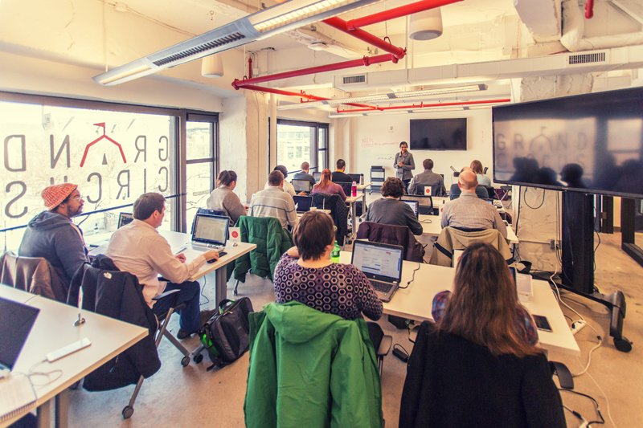

Education
Any woman can be a coder as long as she possess a passion for learning. Technology is always changing therefor participates in this career are always students. For those are interested in attending a class your local community college is a great place to test your desire to become a software developer. There are also several programs in michgan dedicated to teaching indivudals how to code
Grand Circus Detroit

Grand Circus is a company that host bootcamps and workshops to help people launch their career in tech. They have 10 week full time classes for those ready to quit their job and dedicate a few weeks to learn code. Grand Circus also offers part time bootcamps in the evening for those who would like to work and go to class. 92% of grads find jobs in 90 days from Graduation.
The Iron Yard
Iron Yard is working with startups and Fortune 500 companies alike to train the talent Detroit needs to build the software products of tomorrow. Whether helping companies find the right developers or reskilling and upskilling existing employees as technology advances, our corporate training team is dedicated to strengthening Detroit companies for the long haul.
SOON TO COME
Grand Circus is brining a bootcamp to Grand Rapids!!